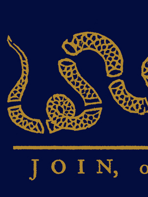

|
 |
The mission of Young Americans for Liberty (University of California, San Diego Chapter) is to train, educate, and mobilize the youth towards a more free society.
Our goal is to cast the leaders of tomorrow and reclaim the policies, candidates, and direction of our government, and spread the ideas of limited government, free markets, sound money, non-intervention, and maximum individual liberty at University of California, San Diego.
We are liberty-minded individuals: Constitutionalists, Classical liberals, Objectivists, Libertarians, Voluntaryists, and... you.
|

Many of our members write for the California Review, the Libertarian/Conservative Newspaper at UC San Diego.
|